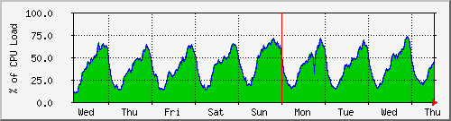
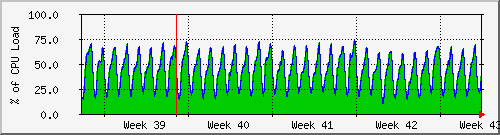
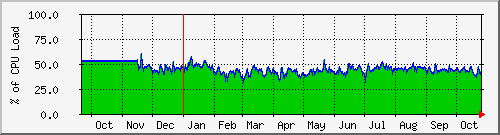

CPU Utilization for Router
The statistics were last updated Thursday, 26 October 2017 at 12:55,
at which time 'data.sky' had been up for 8 days, 10:32:00.
`Daily' Graph (5 Minute Average)

|
Max |
Average |
Current |
| CPU Load : |
74 % |
39 % |
45 % |
`Weekly' Graph (30 Minute Average)

|
Max |
Average |
Current |
| CPU Load : |
73 % |
40 % |
45 % |
`Monthly' Graph (2 Hour Average)

|
Max |
Average |
Current |
| CPU Load : |
72 % |
43 % |
38 % |
`Yearly' Graph (1 Day Average)

|
Max |
Average |
Current |
| CPU Load : |
60 % |
45 % |
42 % |
| GREEN ### |
CPU Utilization |